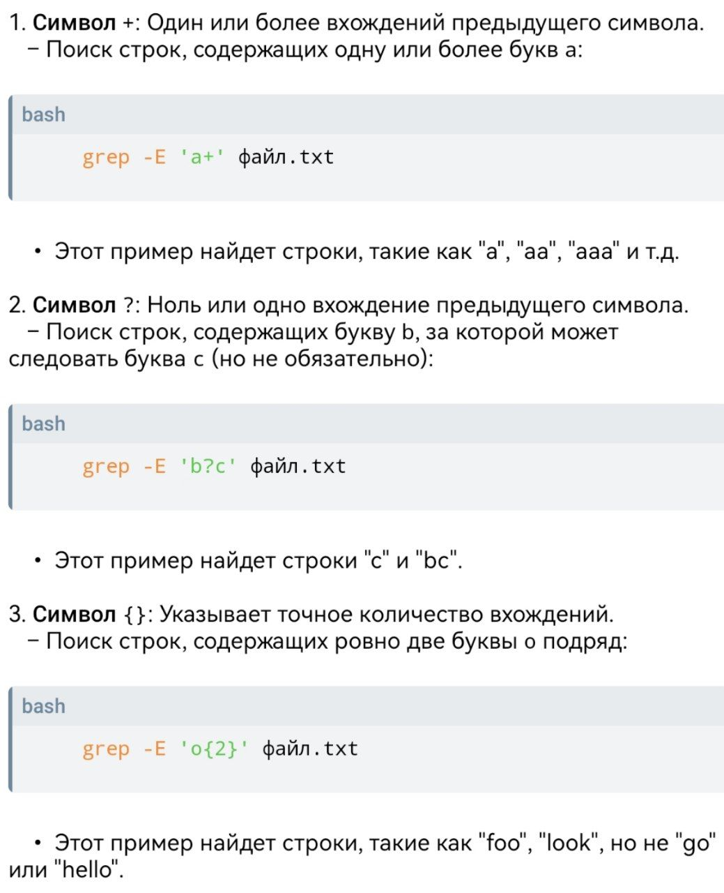
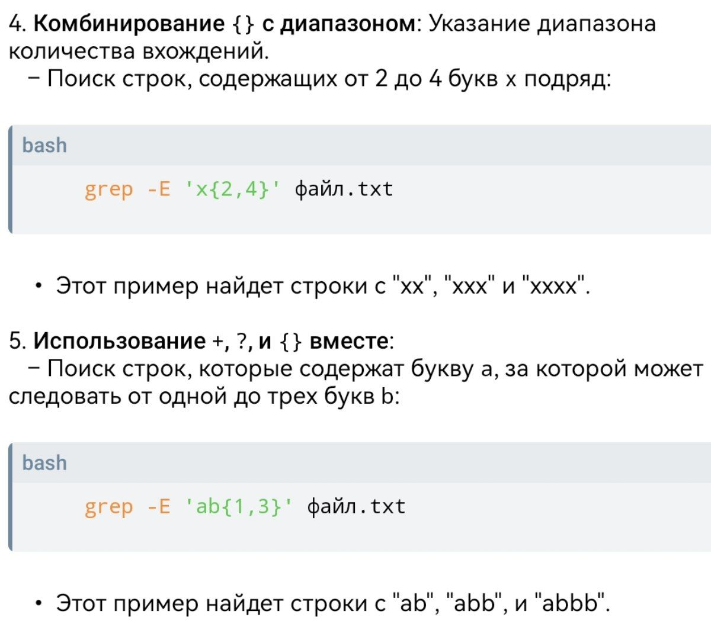

Использование команды `grep` в Bash
grep (Global Regular Expression Print) — это одна из мощных и широко используемых утилит командной строки в Unix-подобных системах, включая GNU.
Bash относится именно к проекту GNU, а не к ядру Linux. Он был разработан в 1989 году в рамках проекта GNU как свободная замена командной оболочки Bourne shell (sh) из UNIX.
Основная функция команды grep
— поиск строк, соответствующих заданному шаблону (регулярному выражению), в одном или нескольких файлах, а также в стандартном вводе.
Основные функции `grep`
1. Поиск строк по шаблону в файле
Самый базовый способ использования grep — найти строки, содержащие определённое слово или фразу.
grep "шаблон" имя_файла.txtНапример, чтобы найти все строки, содержащие слово "error" в файле log.txt:
grep "error" log.txt2. Поиск в нескольких файлах
grep может искать шаблон сразу в нескольких файлах. В этом случае вывод будет предваряться именем файла, в котором найдено совпадение.
grep "шаблон" файл1.txt файл2.txt файл3.txtИли с использованием подстановочных знаков:
grep "шаблон" *.log3. Использование с конвейерами (pipes)
grep часто используется в сочетании с другими командами через конвейер (`|`), чтобы фильтровать вывод этих команд.
ls -l | grep "Aug"Этот пример выведет только те файлы и директории из текущей папки, в названии которых есть "Aug" (например, файлы, созданные или изменённые в августе).
Полезные опции `grep`
-i: Игнорировать регистр символов при поиске.
grep -i "apple" fruits.txt(Найдет "apple", "Apple", "APPLE" и т.д.)
-v: Инвертировать поиск. Вывести строки, которые НЕ содержат указанный шаблон.grep -v "debug" log.txt(Выведет все строки, кроме тех, что содержат "debug".)
-n: Показывать номер строки, на которой найдено совпадение.grep -n "warning" system.log-c: Подсчитать количество строк, соответствующих шаблону.grep -c "connected" network.log-r (или -R): Рекурсивный поиск. Искать шаблон во всех файлах внутри указанной директории и её поддиректорий.grep -r "function_name" /path/to/project/-w: Искать только целые слова.grep -w "is" sentence.txt(Найдет "is", но не найдет "this" или "island".)
-E: Интерпретировать шаблон как расширенное регулярное выражение (ERE).grep -E "apple|banana" fruits.txt(Найдет строки, содержащие "apple" ИЛИ "banana".)
Регулярные выражения с `grep`
grep особенно силён благодаря поддержке регулярных выражений. Вот несколько базовых примеров:
- `.` : Любой одиночный символ.
- `*` : Ноль или более предыдущих символов.
- `^` : Начало строки.
grep "^Start" file.txt(Найдет строки, начинающиеся с "Start".)
grep "end$" file.txt(Найдет строки, заканчивающиеся на "end".)
grep "[aeiou]" word.txt(Найдет строки, содержащие любую гласную.)
Для более сложных шаблонов используйте опцию -E или команду egrep (которая является синонимом grep -E).
Команда grep -E
Команда grep -E используется для поиска строк, которые соответствуют заданному регулярному выражению, с использованием расширенных регулярных выражений (ERE).
Флаг -E позволяет использовать более мощные конструкции регулярных выражений, чем стандартный grep без этого флага, что делает поиск более гибким и удобным.
Основные особенности grep -E
Расширенные регулярные выражения:
С помощью -E вы можете использовать такие символы, как +, ?, {}, |, которые в стандартном grep требуют экранирования.
Синтаксис:
grep -E 'регулярное_выражение' файл
Примеры использования:
– Поиск строк, содержащих одно или более вхождений символа a:
grep -E 'a+' файл.txt
• Поиск строк, содержащих либо cat, либо dog:
grep -E 'cat|dog' файл.txt
• Поиск строк, которые начинаются с буквы A и заканчиваются на цифру:
grep -E '^A.*[0-9]$' файл.txt
Комбинация с другими опциями:
Вы можете комбинировать -E с другими опциями, такими как:
• -i для игнорирования регистра.
• -v для инверсии поиска (выводит строки, не соответствующие шаблону).
• -r для рекурсивного поиска в подкаталогах.
Пример команды:
grep -E -i 'error|warning' /var/log/syslog
Этот пример ищет строки, содержащие "error" или "warning" (независимо от регистра) в файле /var/log/syslog.
Ещё примеры использования grep -E


Команда grep -E является мощным инструментом для фильтрации текстовых данных и может значительно упростить анализ логов и других текстовых файлов.
См. так же: Команда cat.